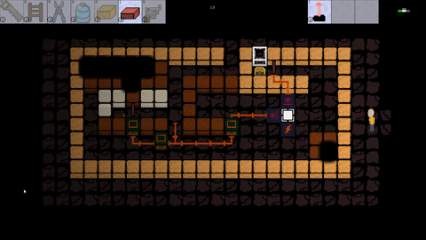

There's a classic game design lesson that states "always make the strongest strategy fun." In puzzle games, the strongest strategy is often to experiment until you notice a pattern and can solve the puzzle. In theory, this is not the case in Herman Electro as experimentation can be deadly. If you die in a puzzle, you go all the way back to the beginning. As designers, we realized that the strongest possible strategy in Herman must necessarily be to stand in front of a puzzle for an indefinite amount of time until you are 100% sure of the answer. This way, the player can guarantee that they will never die. Early on in design, this technique was deemed "unfun gameplay," and according to the maxim we needed to make it weaker. Thus, we added a timer.
This is a video of Herman two years ago, back when the timer was still implemented.
See that tiny number in white on the top of the screen? That's the timer. In the old version of the game, when the timer reached 0, Herman would die. We deemed the timer a necessary evil. This, although somewhat inelegantly, forced players to actually try their solutions to the puzzles instead of standing still while guaranteeing that they had the correct solution.
And then, we had people play the game. What follows is some samples of the feedback we got on the timer accompanied with our answers.
"Why did I just die?"
There's a timer at the top of the screen. In the next version we will make it more visible so this won't be an issue.
"The game's cool, but the timer just feels dumb.
It's a necessary evil. Without the timer, you would spend forever standing in the same room.
"How am I supposed to beat the puzzle that fast?"
You just stood in a room for 4 minutes straight. You are going to have to try solutions without 100% certainty of success if you want to win.
"Wait there's a timer? I never noticed it."
The timer isn't designed for people who play fast like you.
It is clear in hindsight that the only purpose of these "answers" was to give an excuse for why we kept the timer in the game. It was bad design, and the players knew it. However, we were so set on sticking to this "design rule," that we refused to remove the timer at all.
At some point, we decided to move the game's codebase over to a custom engine we wrote in C++ (more on that next week). Adding the timer into the ported version of Herman was relatively low on our priority list, and so it didn't get completed by the time of our first playtests.

As people played the game, something very strange happened. Most people did not stand in front of a single puzzle for an hour until they knew the solution perfectly. Instead, people played Herman as they would other puzzle games, with trial and error. Yes, there were a few people who spent a lot of time on puzzles they couldn't figure out. But the people who chose to do that counter-intuitively were some of the biggest fans of the game. What we had theorized would be a huge issue was not an issue at all. People simply didn't play the game the way that we had worried about. Yes, theoretically they could have increased their chances of winning by taking forever on each puzzle, but nobody actually worked that way. Once people figured out a solution they just went for it, regardless of whether they had carefully thought out all the repurcussions. Clearly the timer had not been necessary, and so we kept it removed.
Why then, did we get so stuck up on keeping the timer? This is due to something I like to call the "solution mindset." The solution mindset of game design is a technique for fine-tuning a game. You look for problems with the game, and design solutions to fix those problems. Eventually, the game should have no problems. While this strategy can help clean up obvious issues with the game, it does not really make the game any more fun. It's not a terrible tool in the game design tool kit, but it should not be the be all end all.
In this case, we identified a problem with the game according to design principles. Then, as we could only find one solution, the timer, we implemented it and stood by it despite negative feedback. We were so focused on solving this "issue" that we didn't realize that our solution was even worse. In this case, the best solution was no solution at all. Even though it wasn't super fun to have no action at all for a minute or two, stopping players from having the option to do that was more annoying than helpful. We only realized this due to circumstance, but it is a good lesson in general. Don't be so focused on finding a solution that you make your game worse. Fun is more important than "perfection."

Now, I know I said that we removed the timer, but in truth it does still exist in some capacity. One challenge character, Erika, implements the timer in a very similar way to how it was originally implemented, except with an even shorter amount of time. In fact, people really like Erika. She's a fun, alternative way to play. However, by having the timer only on a challenge character, people have the choice of whether they want to play with it. Remember the playtester who didn't notice the timer before? Erika is her favorite character simply because it makes the game so much more difficult. The timer wasn't by itself unfun, what was bad about it was its purpose. It was designed purely to stop the player from "choosing to not have fun." If, from the beginning, we had sought to make the game more fun instead of to solve problems, we would have moved the timer away from the main game at least a year earlier.
I hope you all stay aware of this solution mindset whenever you use it. Tune in next week for more information on how (and why) we ported from lua to a custom engine in C++.
_________
If you have any questions or comments, feel free to email us at hermanelectrogame@gmail.com. You can follow our progress and see more posts and gifs on our Twitter account, @HermanElectro.